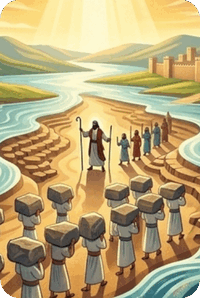
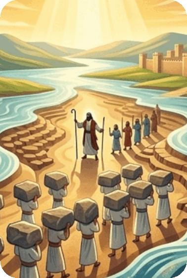
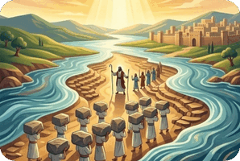

The Book of Joshua continues the story of the Israelites after the exodus from Egypt. The book chronicles the approximately 20 years of Joshua’s leadership of the people after Moses anointed him at the end of Deuteronomy. The twenty-four chapter divisions of the Book of Joshua can be summarized as follows:
Chapters 1 – 12: Entering and conquering the Promised Land. Chapters 13 – 22: Instructions for distributing the portions of the Promised Land. Chapters 23 – 24: Joshua’s farewell address.
The Book of Joshua provides an overview of the military campaigns to conquer the land area that God had promised.
Following the exodus from Egypt and the subsequent forty years of the wilderness wanderings, the newly-formed nation is now poised to enter the Promised Land, conquer the inhabitants, and occupy the territory. The overview that we have here gives abbreviated and selective details of many of the battles and the manner in which the land was not only conquered, but how it was divided into tribal areas.
Summary of the Book of Joshua from GotQuestions.org — is a popular Christian website and "parachurch" ministry that provides answers to a vast array of questions about the Bible, theology, and spiritual life.
Do you have a question? Submit your Bible Questions to GotQuestions.org No need to sign up, just use your email to receive notifications from any answers. Also browse their website for many questions that may answer your questions.
For personal questions, always pray first to God and seek answers through deep prayers. That may answer deep questions in your heart, and mind, as only God, Holy Spirit and Jesus can see through and through on your feelings, thoughts and situation, better than any man can.